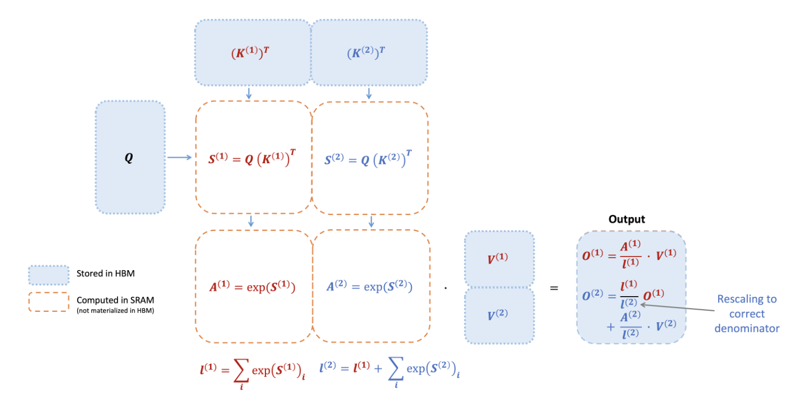
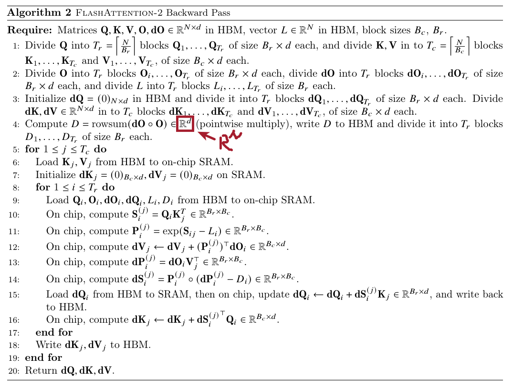
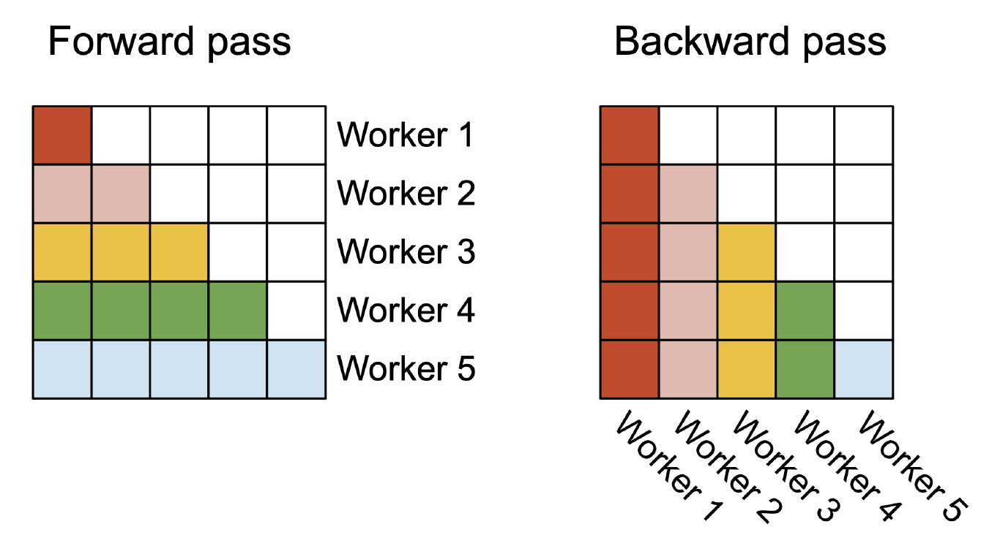
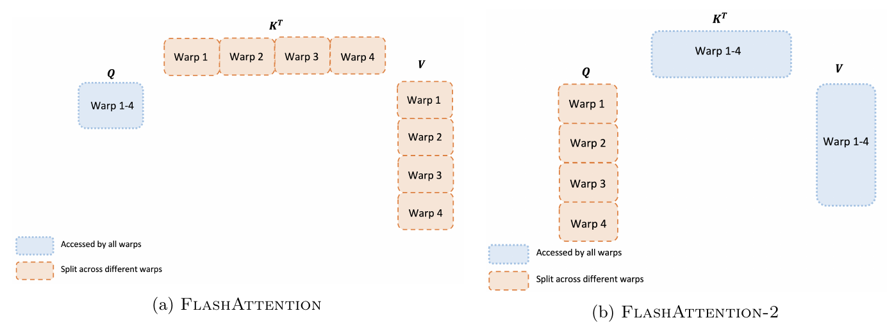

FlashAttention-2论文解读¶
学习目标¶
- 理解FlashAttention-2的对于FlashAttention的改进
1. 概述¶
将 Transformer 扩展至更长的序列长度一直是核心难题。长序列有望提升语言建模和高分辨率图像理解的性能，并开启在代码、音频及视频生成领域的新应用。注意力层（Attention layer）是扩展长序列的主要瓶颈，因为其运行时间和内存消耗随序列长度呈平方级增长。
FlashAttention 利用 GPU 内存层级的非对称性，在无近似损耗的情况下实现了显著的内存节省（从平方级降至线性）和运行加速（相比优化后的基线提升 2-4 倍）。然而，FlashAttention 的速度仍远不及优化后的矩阵乘法（GEMM）操作，仅达到理论最大浮点运算速度（FLOPs/s）的 25-40%。
这种低效源于 GPU 上不同线程块（Thread blocks）和线程束（Warps）之间 工作划分（Work partitioning）的不理想，导致了低占用率或不必要的共享内存读写。为此，我们提出了 FlashAttention-2，通过更好的工作划分来解决这些问题。具体而言，包括如下优化：
- 优化算法 以减少非矩阵乘法类（non-matmul）的浮点运算量；
- 并行化注意力计算，即使是对单个注意力头，也能在不同线程块间并行以提高硬件占用率；
- 在每个线程块内部，优化线程束间的工作分配，以减少通过共享内存进行的通信。
这些改进使 FlashAttention-2 相比初代 FlashAttention 实现了约 2 倍的加速，在 A100 GPU 上达到了理论最大 FLOPs/s 的 50-73%，接近了 GEMM 操作的效率。我们通过端到端训练 GPT 风格模型的实验验证，FlashAttention-2 在每台 A100 GPU 上可达到高达 225 TFLOPs/s 的训练速度（模型 FLOPs 利用率达 72%）。
2. 相关背景知识回顾¶
2.1 硬件特征¶
GPU 性能特征： GPU 由计算单元（如浮点运算单元）和存储层级结构组成。大多数现代 GPU 包含专用单元，用于加速低精度矩阵乘法（例如 Nvidia GPU 上用于 FP16/BF16 矩阵乘法的 Tensor Core）。存储层级包括高带宽显存（HBM）和片上 SRAM（又称共享内存）。以 A100 GPU 为例，它拥有 40-80GB 的 HBM，带宽为 1.5-2.0TB/s；其 108 个流式多处理器（SM）中，每个 SM 拥有 192KB 的片上 SRAM，带宽估计约为 19TB/s。由于 L2 缓存无法由程序员直接控制，我们在讨论中重点关注 HBM 和 SRAM。
执行模型： GPU 拥有海量线程来执行一项操作（称为算子，Kernel）。线程被组织成 线程块（Thread blocks），这些线程块被调度到流式多处理器（SM）上运行。在每个线程块内，线程被分为 线程束（Warps，每组 32 个线程）。线程束内的线程可以通过快速洗牌（Shuffle）指令通信或协作执行矩阵乘法。线程块内的不同线程束则通过读写共享内存（SRAM）进行通信。每个 Kernel 从 HBM 加载输入到寄存器和 SRAM，进行计算，然后将输出写回 HBM。
2.2 标准注意力实现¶
给定输入序列 Q, K, V \in \mathbb{R}^{N \times d}（其中 N 是序列长度，d 是头维度），我们要计算注意力输出 O \in \mathbb{R}^{N \times d}：
其中 softmax 按行应用。对于多头注意力（MHA），该计算在多个头和 Batch 维度上并行执行。
注意力机制的 反向传播 过程如下。令 dO \in \mathbb{R}^{N \times d} 为 O 相对于损失函数的梯度，根据链式法则：
其中 d\text{softmax} 是按行应用的 softmax 的梯度。可以推导出，若对于向量 s 和 p 有 p = \text{softmax}(s)，那么已知输出梯度 dp，其输入梯度为 ds = (\text{diag}(p) - pp^\top)dp。
标准注意力实现的缺陷： 它将矩阵 S 和 P 实例化并存储到 HBM 中，这需要 O(N^2) 的内存。通常 N \gg d（N 约为 1k–8k，d 约为 64–128）。该实现步骤包括：(1) 调用矩阵乘法（GEMM）计算 S = QK^\top 并写入 HBM；(2) 从 HBM 加载 S 计算 softmax 并将结果 P 写入 HBM；(3) 调用 GEMM 计算 O = PV。由于大多数操作受限于显存带宽，大量的内存访问导致了缓慢的实际运行时间。此外，为了反向传播计算梯度，还必须保存 P \in \mathbb{R}^{N \times N}。
2.3 FlashAttention¶
FlashAttention是为了在 GPU 等硬件加速器上加速注意力计算，在保持输出不变（无近似）的前提下减少内存读写。
2.3.1 前向传播¶
FlashAttention 应用了经典的 分块（Tiling） 技术来减少内存 I/O：(1) 将输入块从 HBM 加载到 SRAM；(2) 对该块计算注意力；(3) 更新输出，而无需将巨大的中间矩阵 S 和 P 写入 HBM。由于 softmax 耦合了整行数据，在线 Softmax（Online Softmax） 技术可以将注意力计算切分为块，并对每个块的输出进行重缩放，最终得到正确的结果。
为简单起见，仅考虑注意力矩阵 S 的一个行块，其形式为 [S^{(1)} \quad S^{(2)}]，其中 S^{(1)}, S^{(2)} \in \mathbb{R}^{B_r \times B_c} 为子矩阵，B_r 和 B_c 分别是行块和列块的大小。我们的目标是计算该行块的 Softmax，并将其与 Value 矩阵（形式为 \begin{bmatrix} V^{(1)} \\ V^{(2)} \end{bmatrix}，其中 V^{(1)}, V^{(2)} \in \mathbb{R}^{B_c \times d}）相乘。标准的 Softmax 计算过程如下：
- 计算行最大值： m = \max(\text{rowmax}(S^{(1)}), \text{rowmax}(S^{(2)})) \in \mathbb{R}^{B_r}
- 计算指数和（归一化因子）： \ell = \text{rowsum}(e^{S^{(1)} - m}) + \text{rowsum}(e^{S^{(2)} - m}) \in \mathbb{R}^{B_r}
- 计算概率矩阵： P = [P^{(1)} \quad P^{(2)}] = \text{diag}(\ell)^{-1} \begin{bmatrix} e^{S^{(1)} - m} & e^{S^{(2)} - m} \end{bmatrix} \in \mathbb{R}^{B_r \times 2B_c}
- 计算最终输出： O = [P^{(1)} \quad P^{(2)}] \begin{pmatrix} V^{(1)} \\ V^{(2)} \end{pmatrix} = \text{diag}(\ell)^{-1} (e^{S^{(1)} - m} V^{(1)} + e^{S^{(2)} - m} V^{(2)}) \in \mathbb{R}^{B_r \times d}
与其相反，Online Softmax 会针对每个分块计算“局部”Softmax，并通过重缩放（Rescale）在最后获得正确的输出：
- 第一步（处理第一个块 S^{(1)}）：
- m^{(1)} = \text{rowmax}(S^{(1)}) \in \mathbb{R}^{B_r} （局部最大值）
- \ell^{(1)} = \text{rowsum}(e^{S^{(1)} - m^{(1)}}) \in \mathbb{R}^{B_r} （局部指数和）
- \tilde{P}^{(1)} = \text{diag}(\ell^{(1)})^{-1} e^{S^{(1)} - m^{(1)}} （局部 Softmax 概率）
- O^{(1)} = \tilde{P}^{(1)} V^{(1)} = \text{diag}(\ell^{(1)})^{-1} e^{S^{(1)} - m^{(1)}} V^{(1)} （局部加权输出）
- 第二步（更新并结合第二个块 S^{(2)}）：
- m^{(2)} = \max(m^{(1)}, \text{rowmax}(S^{(2)})) = m （更新全局最大值）
- \ell^{(2)} = e^{m^{(1)} - m^{(2)}} \ell^{(1)} + \text{rowsum}(e^{S^{(2)} - m^{(2)}}) = \ell （通过重缩放对旧的指数和进行修正，并累加新的指数和）
- \tilde{P}^{(2)} = \text{diag}(\ell^{(2)})^{-1} e^{S^{(2)} - m^{(2)}}
- O^{(2)} = \text{diag}(\ell^{(1)} \cdot \ell^{(2)-1}) e^{m^{(1)} - m^{(2)}} O^{(1)} + \tilde{P}^{(2)} V^{(2)} = O（通过重缩放旧的输出并加上当前块的贡献，得到最终的全局输出 O）
我们展示了 FlashAttention 如何利用 Online Softmax 来实现分块计算（Tiling，见下图），从而减少内存的读取与写入。

FlashAttention 前向传播执行过程示意图。图中展示了当 Key 矩阵 K 被划分为两个分块，且 Value 矩阵 V 同样被划分为两个分块时的处理流程。通过针对每个分块分别计算注意力并对输出进行重缩放（Rescaling），我们最终能得到正确的结果，同时避免了对中间矩阵 S 和 P 进行昂贵的内存读写操作。为了简化示意图，我们省略了 Softmax 步骤中“每个元素减去行最大值”的具体细节。
2.3.2 反向传播¶
在反向传播过程中，由于输入矩阵 Q, K, V 的分块已经加载到 SRAM 中，FlashAttention 通过重新计算注意力矩阵 S 和 P 的值，避免了存储巨大的中间变量。通过无需保存大小为 N \times N 的大矩阵 S 和 P，FlashAttention 根据序列长度的不同，可实现 10 到 20 倍的显存节省（所需显存与序列长度 N 呈线性关系，而非平方关系）。由于减少了内存读写，反向传播在实际运行时间（Wall-clock speedup）上也实现了 2 到 4 倍的加速。
反向传播对第 2.2 节中的公式应用了分块技术（Tiling）。虽然从概念上讲，反向传播比前向传播更简单（不存在 Softmax 的重缩放问题），但其实际实现要复杂得多。这是因为与前向传播仅需 2 次矩阵乘法相比，反向传播需要进行 5 次矩阵乘法，因此需要更多的变量保留在 SRAM 中。
3 FlashAttention-2：算法、并行性与工作划分¶
首先，FlashAttention-2算法对 FlashAttention 进行了几项改进，以减少 非矩阵乘法（non-matmul） 的浮点运算次数（FLOPs）。随后，我们介绍了如何在不同的 线程块（thread blocks） 上并行化计算，以充分利用 GPU 资源。最后，我们说明了如何在一个线程块内的不同 Warp 之间划分工作，以减少对 共享内存（shared memory） 的访问次数。这些改进带来了 2-3 倍的提速。
3.1 前向传播算法¶
我们对 FlashAttention 的算法进行了微调，以减少非矩阵乘法的 FLOPs。这是因为现代 GPU 拥有专门的计算单元（例如 Nvidia GPU 上的 Tensor Cores），使得矩阵乘法（matmul）的速度远快于其他运算。
举例来说，A100 GPU 的 FP16/BF16 矩阵乘法理论最大吞吐量为 312 TFLOPs/s，而其非矩阵乘法的 FP32 吞吐量仅为 19.5 TFLOPs/s。另一种理解方式是：每一次非矩阵乘法运算的开销是矩阵乘法运算的 16 倍。为了保持高吞吐量（例如达到理论最大 TFLOPs/s 的 50% 以上），我们希望尽可能将时间花在矩阵乘法运算上。
我们重新审视第 2.3 节中展示的 Online Softmax 技巧，并进行了两项细微调整，以减少非矩阵乘法（non-matmul）的浮点运算次数（FLOPs）。
3.1.1 取消中间步骤的归一化¶
我们不需要在每次更新输出时都用 \text{diag}(\ell^{(2)})^{-1} 对两项进行重缩放：
相反，我们可以维护一个“未缩放”版本的 \tilde{O}^{(2)}，并记录统计量 \ell^{(2)}：
仅在循环结束时，我们才用 \text{diag}(\ell^{(last)})^{-1} 对最终的 \tilde{O}^{(last)} 进行缩放，从而获得正确的输出。
3.1.2 减少存储统计量¶
在反向传播中，我们不需要同时保存最大值 m^{(j)} 和指数和 \ell^{(j)}。我们只需要存储 LogSumExp：L^{(j)} = m^{(j)} + \log(\ell^{(j)})。
为什么可以只存储LogSumExp呢？
在反向传播中，我们需要重新计算前向传播时的 P 矩阵（Softmax 后的结果）。Softmax 的标准形式为：
如果我们存储了 L = m + \log(\ell)，那么在反向传播重算时，可以直接通过以下公式还原归一化项：
可以看到，L 包含了重构 Softmax 概率所需的所有信息。我们不再需要分别知道 m 是多少、\ell 是多少，只要知道它们的组合 L 即可。
在第 2.3 节提到的双分块简单案例中，现在的 Online Softmax 技巧演变为：
- 处理第一个块 S^{(1)}：
- m^{(1)} = \text{rowmax}(S^{(1)}) \in \mathbb{R}^{B_r}
- \ell^{(1)} = \text{rowsum}(e^{S^{(1)} - m^{(1)}}) \in \mathbb{R}^{B_r}
- \tilde{O}^{(1)} = e^{S^{(1)} - m^{(1)}} V^{(1)} \in \mathbb{R}^{B_r \times d}
- 更新并结合第二个块 S^{(2)}：
- m^{(2)} = \max(m^{(1)}, \text{rowmax}(S^{(2)})) = m
- \ell^{(2)} = e^{m^{(1)} - m^{(2)}} \ell^{(1)} + \text{rowsum}(e^{S^{(2)} - m^{(2)}}) = \ell
- \tilde{O}^{(2)} = \text{diag}(e^{m^{(1)} - m^{(2)}}) \tilde{O}^{(1)} + e^{S^{(2)} - m^{(2)}} V^{(2)} = e^{S^{(1)} - m} V^{(1)} + e^{S^{(2)} - m} V^{(2)}
- 最终输出： O^{(2)} = \text{diag}(\ell^{(2)})^{-1} \tilde{O}^{(2)} = O
FlashAttention-2 的前向算法如下图所示：

3.1.3 因果掩码（Causal Masking）¶
因果掩码是注意力机制中的一个常见用例，特别是在自回归语言模型中。我们需要对注意力矩阵 S 应用因果掩码（即：对于任何 j > i 的条目 S_{ij}，均设为 -\infty）。
- 由于 FlashAttention 和 FlashAttention-2 已经采用 分块（Block） 方式运行，对于那些所有列索引都大于行索引的分块（在大序列长度下约占分块总数的一半），我们可以直接 跳过该块的计算。与不带因果掩码的注意力机制相比，这带来了约 1.7 到 1.8 倍的提速。
- 对于那些行索引确定严格大于列索引的分块，我们不需要应用因果掩码。这意味着对于每一行，我们 仅需对一个分块应用因果掩码（假设分块为正方形）。
3.1.4 正确性、运行时间与内存需求¶
与 FlashAttention 一样，算法 1 返回正确的输出 O = \text{softmax}(QK^T)V（无近似），消耗 O(N^2 d) 的浮点运算量（FLOPs），并且除了输入和输出外，仅需要 O(N) 的额外内存（用于存储 LogSumExp L）。其证明过程与FlashAttention的证明几乎一致，故在此省略。
3.2 反向传播（Backward pass）¶
FlashAttention-2 的反向传播过程与 FlashAttention 几乎完全一致。我们做了一项微调：仅使用按行计算的 logsumexp L，而非同时使用 Softmax 的按行最大值（row-wise max）与按行指数和（row-wise sum of exponentials）。

3.3 多查询注意力与分组查询注意力¶
多查询注意力（MQA）和分组查询注意力（GQA）是注意力机制的变体，其中多个查询头会关注相同的键和值头，从而在推理过程中减少 KV 缓存的大小。我们无需为了计算而显式复制键和值头，而是通过隐式地操作头部的索引来执行相同的计算。在反向传播过程中，我们需要对那些被隐式复制的不同头所对应的梯度 dK 和 dV 进行求和。
3.4 并行化（Parallelism）¶
FlashAttention 的第一个版本是在批次大小（batch size）和注意力头数（number of heads）维度上进行并行的。我们使用 1 个线程块（thread block）来处理一个注意力头，总共有 \text{batch size} \times \text{number of heads} 个线程块。每个线程块被调度到流式多处理器（SM）上运行，例如，在 A100 GPU 上有 108 个这样的 SM。当这个数量很大（比如 \ge 80）时，这种调度方式是高效的，因为我们可以有效地利用 GPU 上的几乎所有计算资源。
在处理长序列的情况下（这通常意味着较小的批次大小或较少的头数），为了更好地利用 GPU 上的多处理器，我们现在额外在序列长度（sequence length）维度上进行并行化。这在该运行区间（regime）带来了显著的加速。
前向传播（Forward pass）。 我们可以看到，外层循环（关于序列长度的循环）是极易并行化（embarrassingly parallel）的，我们将它们调度到互不通信的不同线程块上。与 FlashAttention 一样，我们也在批次维度和头数维度上进行并行化。当批次大小和头数较小时，增加序列长度维度的并行性有助于提高占用率（正在使用的 GPU 资源比例），从而在此时带来加速。
这种交换循环顺序的想法（外层循环遍历行块，内层循环遍历列块，这与原版 FlashAttention 论文中的顺序相反），以及在序列长度维度上并行化的思路，最早是由 Phil Tillet 在 Triton的实现中提出并实现的。
反向传播（Backward pass）。 注意，不同列块之间唯一的共享计算是算法 2 中对 dQ 的更新：我们需要将 dQ_i 从 HBM 加载到 SRAM 中，然后在芯片上更新 dQ_i \leftarrow dQ_i + dS_i^{(j)} K_j，最后写回 HBM。因此，我们同样在序列长度维度上进行并行化，并为反向传播的每个列块调度 1 个线程块。我们使用原子加法（atomic adds）在不同的线程块之间进行通信以更新 dQ。
我们在下图中描述了该并行化方案。

3.5 Warp 之间的任务划分¶
上一节我们讨论了如何调度线程块；而在每个线程块内部，我们同样需要决定如何在不同的 warp 之间划分任务。我们通常每个线程块使用 4 个或 8 个 warp，具体的划分方式下图所示。

前向传播（Forward pass）。 对于每个块，FlashAttention 将 K 和 V 分配给 4 个 warp，同时让所有 warp 都能访问 Q。每个 warp 通过矩阵乘法得到 Q K^T 的一个切片，接着它们需要与 V 的一个切片相乘，并通过通信将结果相加。这被称为“split-K”方案。然而，这种做法是低效的，因为所有 warp 都需要将它们的中间结果写入共享内存（shared memory）、同步，然后将中间结果相加。这些共享内存的读写操作拖慢了 FlashAttention 的前向传播速度。
在 FlashAttention-2 中，我们转而将 Q 分配给 4 个 warp，同时让所有 warp 都能访问 K 和 V。在每个 warp 执行矩阵乘法得到 Q K^T 的一个切片后，它们只需与各自共享的 V 切片相乘，即可得到对应的输出切片。warp 之间无需进行通信。共享内存读写次数的减少带来了速度提升。
反向传播（Backward pass）。 类似地，在反向传播中，我们选择对 warp 进行划分以避免“split-K”方案。不过，由于所有不同的输入与梯度（Q、K、V、O、dO、dQ、dK、dV）之间存在更复杂的依赖关系，它仍然需要一定程度的同步。尽管如此，避免“split-K”减少了共享内存的读写，同样带来了速度提升。
块大小调优（Tuning block sizes）。 增大块大小（block sizes）通常会减少共享内存的加载和存储次数，但会增加所需的寄存器数量以及共享内存总量。一旦超过某个块大小，寄存器溢出（register spilling）就会导致显著的性能下降，或者所需的共享内存超过了 GPU 可用的最大容量，导致内核根本无法运行。通常我们会根据头维度 d 以及设备共享内存的大小，选择 \{64, 128\} \times \{64, 128\} 尺寸的块。
由于块大小本质上只有 4 种选择，我们针对每个头维度进行了手动调优，但这其实可以通过自动调优（auto-tuning）来避免这种繁琐的人工劳动。
3.6 反向传播算法里的D¶
在 FlashAttention-2 的反向传播推导中，变量 D 的引入是为了将复杂的 Softmax 雅可比矩阵乘法 简化为元素级的算术运算。
这是算法能实现在 SRAM 中高效运行、避免存储 N \times N 矩阵的核心数学魔术。
3.6.1. D 的数学定义与物理意义¶
在算法第 4 行，定义如下：
其中 \circ 是元素级乘法（Hadamard product）。我们将每一项展开来看： * O_{i} 是前向传播的输出：O_i = \sum_j P_{ij} V_j。 * dO_{i} 是损失函数对输出的梯度。
物理意义： D_i 实际上代表了 当前行对最终输出贡献的加权梯度和。在数学推导中，它是 Softmax 反向传播中的一个“归一化修正项”。它告诉我们：如果我们将这一行所有分值 S_{ij} 同时增加一个微小偏移，输出 O 会如何变化。
3.6.2. 为什么 dS_i^j 可以这样计算？¶
要理解 dS_i^j = P_i^j \circ (dP_i^j - D_i)，我们需要从链式法则推导 Softmax 的梯度。
第一步：对 P 求导 (dP)¶
根据 O = P \cdot V，损失函数 \mathcal{L} 对注意力概率 P 的梯度为： $dP = \frac{\partial \mathcal{L}}{\partial P} = dO \cdot V^T$ 这对应算法的第 13 步。
第二步：从 dP 推导到 dS (核心难点)¶
已知 P_{ij} = \frac{e^{S_{ij}}}{\sum_k e^{S_{ik}}}，这是一个标准的 Softmax 函数。
根据求导法则，对于 \text{Softmax}(\vec{s}) = \vec{p}，其梯度公式为： $\frac{\partial \mathcal{L}}{\partial s_i} = p_i \left( \frac{\partial \mathcal{L}}{\partial p_i} - \sum_k \frac{\partial \mathcal{L}}{\partial p_k} p_k \right)$
最后一个公式的证明在下面，我们这里先假设它正确。
第三步：代入变量简化¶
将我们的变量代入上述公式： 1. \frac{\partial \mathcal{L}}{\partial p_k} 对应 dP_{ik}。 2. \sum_k dP_{ik} P_{ik} 这一项可以通过矩阵恒等式变换： $\sum_k dP_{ik} P_{ik} = \text{rowsum}(dP \circ P)$ 利用 O = PV 和 dP = dO V^T 的性质，可以证明这一项等价于 \text{rowsum}(dO \circ O)，也就是我们定义的 D_i。
因此，单项梯度的公式变为： $dS_{ij} = P_{ij} (dP_{ij} - D_i)$
写成矩阵形式，即： $dS_i^j = P_i^j \circ (dP_i^j - D_i)$
3.6.3. 这种计算方式的优势¶
-
内存效率 (Memory Efficiency)： 如果没有 D，计算 dS 将涉及到 N \times N 的雅可比矩阵。现在我们只需要一个长度为 N 的向量 D，极大地节省了 SRAM 空间。
-
算子融合 (Operator Fusion)： 在 FlashAttention-2 中，D 是在进入双重循环之前就在 HBM 中预计算好的。在内层循环计算 dS_i^j 时，只需要从 SRAM 加载 P_i^j, dP_i^j 和 对应的标量 D_i，计算过程全部是 点对点 (Point-wise) 的，非常适合 GPU 的向量化指令。
-
重算友好： 由于 D 只依赖于 O 和 dO，而 O 在前向传播末尾已经生成，dO 是反向传播的输入，所以 D 可以在最开始就确定，为后续的分块重算打下了基础。
总结： D 是 Softmax 梯度在注意力机制下的具体化表现。它通过提前聚合梯度信息，将原本需要 O(N^2) 空间的交互计算转换成了 O(N) 空间的点乘计算，这也是 FlashAttention-2 能够比标准注意力快数倍的关键数学支撑。
3.7 \text{Softmax} 的梯度推导¶
3.7.1. 基础定义¶
假设输入向量为 \vec{s} = [s_1, s_2, \dots, s_n]，Softmax 的输出为 \vec{p} = [p_1, p_2, \dots, p_n]。 其中第 i 个分量的公式为： $p_i = \frac{e^{s_i}}{\sum_{k=1}^n e^{s_k}}$
我们要计算的是梯度 \frac{\partial p_i}{\partial s_j}。这里会出现两种情况： 1. i = j：自变量 s_j 既在分子也在分母。 2. i \neq j：自变量 s_j 只在分母。
3.7.2. 利用商法则进行求导¶
根据微积分的商法则 (\frac{f}{g})' = \frac{f'g - fg'}{g^2}，令 f = e^{s_i}，g = \sum_{k=1}^n e^{s_k}。
情况 A：当 i = j 时¶
$\frac{\partial p_i}{\partial s_i} = \frac{(e^{s_i})' \cdot g - e^{s_i} \cdot (g)'}{g^2}$ * (e^{s_i})' 对 s_i 求导是 e^{s_i}。 * g 对 s_i 求导也是 e^{s_i}（因为和式中只有 e^{s_i} 项含有 s_i）。
代入得： $\frac{\partial p_i}{\partial s_i} = \frac{e^{s_i} \cdot g - e^{s_i} \cdot e^{s_i}}{g^2} = \frac{e^{s_i}}{g} \cdot \frac{g - e^{s_i}}{g} = p_i (1 - p_i)$
情况 B：当 i \neq j 时¶
$\frac{\partial p_i}{\partial s_j} = \frac{0 \cdot g - e^{s_i} \cdot (e^{s_j})}{g^2}$ * 因为分子 e^{s_i} 不含 s_j，所以 f'=0。 * 分母 g 对 s_j 求导得到 e^{s_j}。
代入得： $\frac{\partial p_i}{\partial s_j} = \frac{- e^{s_i} e^{s_j}}{g^2} = - \frac{e^{s_i}}{g} \cdot \frac{e^{s_j}}{g} = -p_i p_j$
把这两种情况合并，就可以得到：
3.7.3. 引入损失函数 \mathcal{L} 的链式法则¶
在实际的反向传播中，我们要计算的是 \frac{\partial \mathcal{L}}{\partial s_j}。根据链式法则： $\frac{\partial \mathcal{L}}{\partial s_j} = \sum_i \frac{\partial \mathcal{L}}{\partial p_i} \frac{\partial p_i}{\partial s_j}$
我们将上面推导的结果并代入： $\frac{\partial \mathcal{L}}{\partial s_j} = \sum_i \frac{\partial \mathcal{L}}{\partial p_i} p_i (\delta_{ij} - p_j)$
展开这个求和： $\frac{\partial \mathcal{L}}{\partial s_j} = \frac{\partial \mathcal{L}}{\partial p_j} p_j (1 - p_j) + \sum_{i \neq j} \frac{\partial \mathcal{L}}{\partial p_i} (-p_i p_j)$
提取公因子 p_j： $\frac{\partial \mathcal{L}}{\partial s_j} = p_j \left( \frac{\partial \mathcal{L}}{\partial p_j} - \sum_i \frac{\partial \mathcal{L}}{\partial p_i} p_i \right)$
3.7.4. 为什么这对应 FlashAttention-2 中的 D？¶
在注意力机制中，\frac{\partial \mathcal{L}}{\partial p_i} 就是 dP_{ij}。 观察公式括号里的第二项 \sum_i \frac{\partial \mathcal{L}}{\partial p_i} p_i： * 它对当前行所有的梯度进行加权求和。 * 在 FlashAttention 论文的推导中，这一项被证明等价于 \text{rowsum}(dO \circ O)，即变量 D。
总结： 你看到的公式 dS = P \circ (dP - D) 实际上就是 Softmax 导数标准形式的向量化表达。D 的存在完美抵消了 Softmax 分母中所有项相互耦合带来的复杂计算。
3.8 为什么warp的划分fa2优于fa¶
FlashAttention-2 相比一代的提升核心在于 并行策略的转变：从“切分 K, V（Split-K）”转向了“切分 Q（Split-Q）”。
这种转变之所以能带来显著提速，主要归功于 消除跨 Warp 的通信 和 减少共享内存（Shared Memory）的读写开销。
以下是详细对比解释：
3.8.1. FlashAttention-1 的局限：Split-K 方案¶
在一代中，为了计算一个 Q 块的结果，它让不同的 Warp 分担了 K 和 V 的负载。
- 工作流程：
- 每个 Warp 计算 Q \cdot K_{slice}^T，得到注意力矩阵的一部分。
- 每个 Warp 拿着这部分注意力结果去乘对应的 V_{slice}。
- 痛点（通信）：因为每个 Warp 只处理了序列的一部分，最后的结果 O 必须是所有 Warp 结果的 加权累加。
- 性能瓶颈：
- Warp 之间不能直接说话，必须把中间结果写回到 Shared Memory。
- 需要进行 同步（Synchronization），确保所有 Warp 都写完了。
- 最后还要从 Shared Memory 读出来进行求和减少（Reduction）。
- 这种“写-等-读”的过程浪费了大量时钟周期。
3.8.2. FlashAttention-2 的进化：Split-Q 方案¶
二代改变了思路：让每个 Warp 完整地拥有所有的 K 和 V 信息，但只负责一小部分的 Q。
- 工作流程：
- Q 被横向切分。比如 Warp 1 只负责计算前 1/4 序列的输出。
- 由于每个 Warp 都能访问到当前 Block 内完整的 K 和 V，它独立计算出的结果就是最终输出 O 的对应切片。
- 为什么更好？
- 零通信（No Communication）：每个 Warp 计算的是输出矩阵中不同的“行”。计算完后，它们可以直接把结果写回 HBM（显存），不需要跟其他 Warp 交换数据。
- 减少存取（Less R/W）：去掉了写回 Shared Memory 供他人求和的步骤，极大地降低了内存带宽压力。
- 计算密度更高：GPU 的算力被更直接地用于矩阵乘法（GEMM），而不是浪费在协调数据同步上。
3.8.3. 核心优势总结¶
| 特性 | FlashAttention-1 (Split-K) | FlashAttention-2 (Split-Q) |
|---|---|---|
| 切分对象 | K 和 V (纵向切分列) | Q (横向切分行) |
| Warp 间依赖 | 强依赖，需要合并中间结果 | 无依赖，独立计算 |
| 同步开销 | 高（需在 Shared Memory 同步） | 极低（几乎无需同步） |
| 内存读写 | 频繁访问 Shared Memory | 最小化中间变量读写 |
| 硬件利用率 | 受限于内存带宽和同步延迟 | 更接近 GPU 理论算力峰值 |
一句话总结： FlashAttention-2 通过让每个线程束（Warp）“自扫门前雪”（独立完成自己那部分 Q 的完整计算），彻底甩掉了中间结果交换的包袱，从而实现了更纯粹、更高效的并行。
我的总结：
我们要计算 QK^TV。
fa的方法：
其中：
每个warp都计算整个序列(1,2,...,N)一部分特征(d)，所以需要同步写回到shared memory。
fa2的方法：
每个warp都计算部分序列的全部特征，之间没有重叠，所以不需要同步。
3.9 为什么比较时间要用TFLOPs/s。¶
普通的attention计算不需要额外的重算。为什么不直接比较时间？
在算法竞赛或基础课中，我们习惯于直接看耗时（秒/毫秒），但在深度学习系统（尤其是针对 GPU 优化的算子）研究中，TFLOPs/s（每秒万亿次浮点运算） 是比纯时间更公平、更具洞察力的指标。
以下是为什么要这样做的原因：
3.9.1. 吞吐量（Efficiency）vs. 绝对时间¶
直接比较“时间”就像比较两辆车谁跑得快，而不看它们载了多少货。
- 时间 受 batch size、序列长度、模型参数等多种外部因素影响。
- TFLOPs/s 衡量的是 硬件利用率。它告诉我们：算法在多大程度上“榨干”了 A100 GPU 的理论算力峰值（A100 的 FP16 峰值为 312 TFLOPs/s）。
如果 FlashAttention-2 达到了 225 TFLOPs/s，说明它已经利用了硬件约 72% 的极限算力。这证明了它的提速不仅仅是因为算法逻辑简单，更是因为它的 IO 访问模式（Memory Access Pattern） 非常高效。
3.9.2. 为什么 FlashAttention 的“重算”不计入分子？¶
这里有一个关键点：FlashAttention 为了省显存做了额外的重算。 在计算 TFLOPs/s 时，公式里的 FLOPs（分子）通常采用的是 “有效计算量”（即完成任务所需的最小理论计算量），而不是“实际执行的计算量”。
- 如果把重算也计入分子：那么即便一个算法写得很烂，只要它不停地做无效重算，它的 TFLOPs/s 看起来也会很高。这显然是作弊。
- 只计入有效计算量：这实际上是对 FlashAttention 的一种 惩罚。即便它多做了一部分计算（反向传播重算），如果它的 TFLOPs/s 依然比 baseline 高，说明它通过优化 IO 节省下来的时间，远超重算多花的时间。
3.9.3. 公式中的逻辑拆解¶
论文中提到的公式来源于 Megatron-LM：
- 第一项（权重计算）：全连接层（Linear layers）的计算。
- 第二项（Attention 计算）：QK^T 和 PV。
- 系数 6 和 12：包含了前向（1倍）和反向（标准反向是前向的2倍，合计3倍；由于矩阵乘法 A*B 包含乘和加，所以再乘2，得到 6 和 12）。
关键点： 即使 FlashAttention 在反向传播中实际上做了 2.5 倍甚至更多的乘法，但在分母中计算“效率”时，依然按标准 Attention 的“有效工作量”来算。这种做法是为了证明：“虽然我绕了远路（重算），但我跑得太快了，最后还是第一个到达终点。”
3.9.4. 为什么要遵循“不除以 2”的习惯？¶
文中提到 Causal Mask 实际上让计算量减半，但他们没除以 2。
- 一致性：学术界（如 Megatron-LM）习惯使用这个统一公式。如果 FlashAttention 为了让自己的 TFLOPs/s 看起来更高而除以 2（减小分子），反而会被质疑数据注水。
- 保守估计：保持大的分子，算出来的 TFLOPs/s 结果会相对保守。如果在这种保守公式下都能达到 225 TFLOPs/s，说明它的实际效率极其惊人。
3.9.5 总结¶
直接比较时间只能看到“结果”，而 TFLOPs/s 能看到“天花板”。
通过 TFLOPs/s，作者向读者展示了：FlashAttention-2 的提速并不是靠削减计算任务（计算量反而增加了），而是通过极致的 算子融合（Operator Fusion） 和 并行策略优化，解决了 GPU 的“内存墙”问题，让 GPU 不再长时间处于“等数据”的闲置状态。
4 FlashAttention-3¶
FlashAttention-3 是专为 NVIDIA Hopper 架构（如 H100 GPU）深度优化并引入全新算法改进的版本。相较于 FlashAttention-2，它在性能、硬件特性利用率以及低精度计算方面带来了三大核心改进：
4.1. 生产者-消费者异步并发（Producer-Consumer Asynchrony）¶
- Warp 专精流水线（Warp-Specialized Software Pipelining）：利用 Hopper 架构引入的 TMA（Tensor Memory Accelerator） 硬件单元和异步 Tensor Core 指令（WGMMA），将数据的搬运（生产者）与矩阵乘法计算（消费者）分流到不同的 warp 中执行。
- 隐藏访存与指令延迟：通过异步流水线极大程度地隐藏了全局内存（HBM）到共享内存（SRAM）的访存延迟以及指令发射延迟，使硬件资源利用率大幅提升。
4.2. GEMM 与 Softmax 的交织重叠计算（Interleaving GEMM and Softmax）¶
- 打破串行依赖：在传统的 Attention 计算中，矩阵乘法（GEMM，如 QK^T）和非线性的 Softmax 操作往往存在强先后依赖。FlashAttention-3 通过精细的块级（Block-wise）调度，将低吞吐量的 Softmax 操作“隐藏”在异步的矩阵乘法过程之下。
- 流水线并行：在计算当前块的 GEMM 时，同时对前一个块的结果进行 Softmax 处理，从而消除了传统实现中由于等待 Softmax 造成的硬件空转。
4.3. 硬件加速的低精度 FP8 计算与精度补偿¶
- FP8 算力翻倍：全面适配 Hopper 架构的 FP8 Tensor Core，使理论峰值算力直接翻倍（在 H100 上 FP16 可达约 740 TFLOPs/s，而 FP8 甚至能接近 1.2 PFLOPs/s）。
- 块量化与非相干处理（Block Quantization & Incoherent Processing）：针对直接使用 FP8 容易因大数值离群点（Outliers）导致精度崩塌的问题，FlashAttention-3 引入了块量化和非相干处理技术。这在采用 FP8 加速的同时，将数值误差比标准 FP8 注意力降低了 2.6 倍，保证了模型训练和推理的准确性。
4.4 性能表现¶
在 NVIDIA H100 上，FlashAttention-3 相比 FlashAttention-2 实现了 1.5 倍到 2.0 倍 的性能提升：
- FP16/BF16 下硬件利用率可达理论峰值的 75%（最高约 740–840 TFLOPs/s）。
- FP8 模式下更能冲刺接近 1.2–1.3 PFLOPs/s 的惊人吞吐量。
5. FlashAttention-4¶
FlashAttention-4 是专为 NVIDIA Blackwell 架构（如 B200 GPU）深度设计并于 2026 年初发布的全新版本。针对 Blackwell 架构引入的不对称硬件演进与全新特性，FlashAttention-4 进行了从底层算法到编程模型的全面重构。
5.1. 深度适配与榨干 Blackwell 硬件特性¶
Blackwell 相比 Hopper 带来了翻倍的算力与全新的硬件单元，FlashAttention-4 针对性地利用了以下核心架构特性：
- 张量内存（TMEM）利用：每个 SM 配备了 256 KB 的片上 TMEM 专用内存，用于存储中间张量核心结果，大幅减缓了共享内存（Shared Memory）的压力。
- 更大的 MMA 瓦片（128×128 Tiles）：原生支持面积达到 Hopper 两倍的 128×128 瓦片矩阵乘法加速指令。
- 完全异步的张量核心操作：MMA 计算可以直接异步写入 TMEM。
- 2-CTA MMA 模式：允许协作线程数组（Cooperative Thread Arrays）执行带有分布式内存的单个 MMA，并通过分布式共享内存高效交换瓦片，降低共享内存流量。
5.2. CuTe-DSL（Python 嵌入式领域特定语言）实现¶
打破了以往依赖繁重 C++ 模板（C++ Templates）的传统：
- 编译速度提升 20–30 倍：完全采用嵌入在 Python 中的 CuTe-DSL 编写，使内核编译从过去的“几分钟甚至几小时”缩短至“几秒钟”，极大地降低了 GPU 内核开发与调试的门槛。
- 保留底层掌控力：在拥有 Python 灵活性的同时，依然保持了与 CUTLASS C++ 相同的 PTX 级别底层精细控制能力。
5.3. 高级调度策略与流水线优化¶
- 最长处理时间优先（LPT）调度：通过特殊的遍历顺序优化因果掩码（Causal Mask）场景下的负载不平衡问题。
- 变长序列与确定性执行：引入预处理内核根据执行时间对批次进行排序，并使用信号量锁实现序列化全局归约，从而保证可重现的训练（Deterministic Execution）。
- 流水线重构：在前向传播中采用两个 warp 组处理 softmax、一个单独校正 warp 组负责输出重缩放；反向传播则深度融合了 2-CTA 模式。
5.4. 性能表现¶
在 NVIDIA B200 GPU 上，FlashAttention-4 达到了前所未有的高度：
- 巅峰算力：在 BF16 精度下，性能可达 1613 TFLOPs/s（硬件理论峰值的 71% 左右）。
- 显著加速：前向传播速度比 cuDNN 9.13 快 1.3 倍，比现有的 Triton 实现快 2.7 倍；在长序列反向传播中也持续保持领先优势。